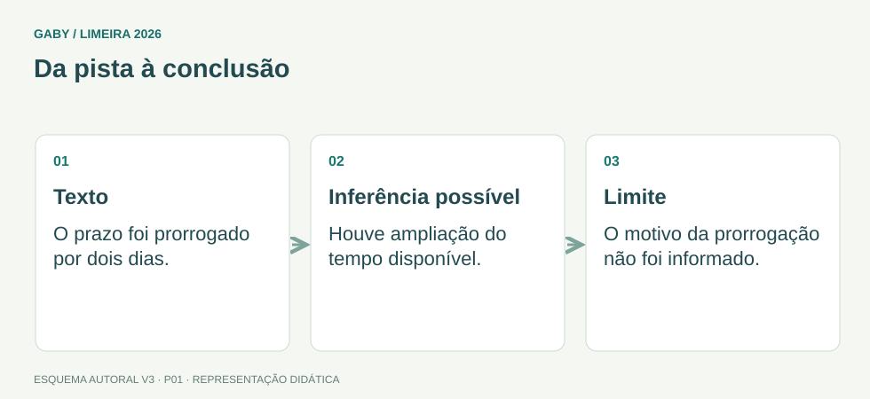

Objetivos do módulo
- Distinguir informação explícita de inferência.
- Identificar tema, ideia central, finalidade e ponto de vista.
- Reconhecer relações de causa, consequência, oposição, condição e conclusão.
- Evitar extrapolações e generalizações indevidas em alternativas.
Da pista à conclusão

Descrição em texto do esquema
- Texto: O prazo foi prorrogado por dois dias.
- Inferência possível: Houve ampliação do tempo disponível.
- Limite: O motivo da prorrogação não foi informado.
Oficina visual · aplique o esquema
“Depois da abertura do canal digital, as filas diminuíram.” A frase prova que o canal foi a única causa da redução? Justifique.
Atividade autoral complementar da V3. Registre sua resposta; a resolução está no arquivo de gabarito e revisão.
Mapa do conteúdo
1. Compreender não é adivinhar
Interpretar um texto significa construir sentido a partir das informações que ele efetivamente oferece. A resposta correta precisa ser sustentada por palavras, relações ou pistas do próprio texto. Conhecimento de mundo ajuda a compreender, mas não autoriza acrescentar fatos que o autor não apresentou.
Em prova, uma alternativa pode ser verdadeira na vida real e, mesmo assim, estar errada porque não responde ao texto. O critério é textual: pergunte sempre “qual trecho sustenta esta conclusão?”.
2. Explícito, implícito e inferência
Informação explícita aparece de forma direta. Se o texto diz que o atendimento começa às 8h, não há inferência: basta localizar. A informação implícita exige uma dedução apoiada em pistas.
Inferir não é imaginar livremente. É combinar dados do texto de modo lógico. Quanto maior o salto entre o que foi dito e a alternativa, maior a chance de extrapolação.
| Tipo | Como reconhecer | Exemplo |
|---|---|---|
| Explícita | Está declarada | “A reunião começou às 9h.” → horário: 9h. |
| Inferida | Decorre de pistas | “Entrou com o guarda-chuva pingando.” → provavelmente chovia. |
| Extrapolada | Acrescenta informação sem apoio | “Entrou com guarda-chuva.” → veio de ônibus. |
3. Tema, ideia principal e finalidade
Tema é o assunto geral; costuma caber em poucas palavras. Ideia principal é o que o texto afirma sobre esse tema. Em um texto sobre digitalização de serviços públicos, o tema pode ser “serviços digitais”, enquanto a ideia principal pode ser “a digitalização aumenta a eficiência, mas exige inclusão digital”.
A finalidade responde ao propósito comunicativo: informar, explicar, orientar, persuadir, regulamentar, criticar, narrar, entre outros. O gênero dá pistas, mas a finalidade deve ser confirmada pelo conteúdo.
4. Conectivos e relações lógicas
Conectivos funcionam como placas de trânsito do texto. Eles indicam como uma ideia se relaciona à outra. Trocar um conectivo pode alterar profundamente o sentido.
| Relação | Marcas frequentes |
|---|---|
| Causa/explicação | porque, pois, visto que |
| Consequência/conclusão | por isso, portanto, logo |
| Oposição | mas, porém, entretanto, contudo |
| Concessão | embora, ainda que, mesmo que |
| Condição | se, caso, desde que |
| Adição | e, além disso, bem como |
5. Como eliminar alternativas
Antes de escolher, compare a intensidade da alternativa com a intensidade do texto. “Alguns” não significa “todos”; “pode” não significa “deve”; “frequentemente” não significa “sempre”. Bancas exploram palavras absolutas para criar conclusões fortes demais.
Também desconfie de alternativas que invertem causa e consequência, trocam o agente da ação ou apresentam uma informação secundária como se fosse a tese central.
Exemplos resolvidos passo a passo
Exemplo 1
Situação: “Após a implantação de vídeos de orientação, aumentou o número de usuários do sistema.” O que se pode inferir?
Resolução: O trecho informa que a utilização aumentou depois dos vídeos. É possível que a orientação tenha contribuído, mas a ordem temporal, isoladamente, não demonstra causalidade. Não se pode concluir que todos tiveram dificuldade ou que o atendimento presencial acabou.
Exemplo 2
Situação: “Embora o atendimento digital seja rápido, alguns procedimentos exigem comparecimento presencial.” Qual a relação introduzida por “embora”?
Exemplo 3
Situação: Texto sobre arquivos destaca rapidez de localização, preservação e segurança. Qual é a ideia principal?
Pegadinhas e erros frequentes
- Marcar alternativa com informação verdadeira, porém ausente do texto.
- Transformar “alguns” em “todos” ou “pode” em “deve”.
- Confundir tema com ideia principal.
- Ignorar conectivos de oposição e concessão.
- Escolher uma frase do texto que é detalhe, não síntese.
Resumo de prova
- Explícito = localizado; inferência = deduzido com pistas.
- Tema é assunto; ideia principal é a afirmação central.
- Finalidade depende do propósito comunicativo.
- Conectivos revelam relações lógicas.
- Alternativas absolutas exigem cuidado.
- Toda conclusão deve ter apoio textual.
Exercícios do módulo
Resolva sem consultar o arquivo de gabarito. As questões são autorais e construídas para treinar os conceitos do edital.
- a maioria concluiu
- exatamente metade concluiu
- todos concluíram
- alguns concluíram
- a redução ocorreu exclusivamente pelo canal eletrônico
- o canal eletrônico pode ter contribuído para a redução
- o atendimento presencial foi extinto
- todos preferem o canal eletrônico
- causa
- concessão
- conclusão
- condição
- a opinião central desenvolvida sobre esse tema
- qualquer exemplo citado
- o título, sempre
- necessariamente a mesma expressão
- Todos os alunos chegaram cedo.
- Há alunos cuja chegada foi antecipada.
- Pelo menos dois alunos podem ter chegado cedo.
- Nem todos necessariamente chegaram cedo.
- tempo
- oposição
- conclusão
- condição
- informar sobre fatos
- dar ordens jurídicas
- ensinar uma receita
- produzir apenas humor
- o que seria mais justo
- as evidências linguísticas do texto
- o que geralmente acontece na vida real
- sua opinião pessoal
- alternância
- explicação anterior
- consequência
- comparação
- Ignorar o comando
- Escolher a mais longa
- Comparar cada termo da alternativa com o trecho-base
- Preferir a que usa palavras absolutas
Quando terminar, abra Português 01 - Interpretação de Textos - Gabarito e Revisão.
Checklist de domínio
- ☐ Distinguir informação explícita de inferência.
- ☐ Identificar tema, ideia central, finalidade e ponto de vista.
- ☐ Reconhecer relações de causa, consequência, oposição, condição e conclusão.
- ☐ Evitar extrapolações e generalizações indevidas em alternativas.
Meta do módulo: 80% ou mais nas questões, sem depender de consulta.
Referências e conteúdos auxiliares
- Inep — Matrizes e escalas do SaebApoio às habilidades de leitura e interpretação. Não corresponde à matriz do concurso de Limeira.
- Presidência da República — Manual de Redação, 3ª ediçãoClareza, redação oficial, concordância, regência e pontuação. Referência de apoio; modelos locais podem ter regras próprias.
Referências externas de apoio consultadas para a V3 em 27/09/2026. A origem das questões é o material autoral do projeto; estes links não indicam que uma instituição publicou ou validou os exercícios. As páginas externas precisam de internet. Em informática, confira a versão do programa; em legislação, observe o recorte e as regras de atualização do edital.